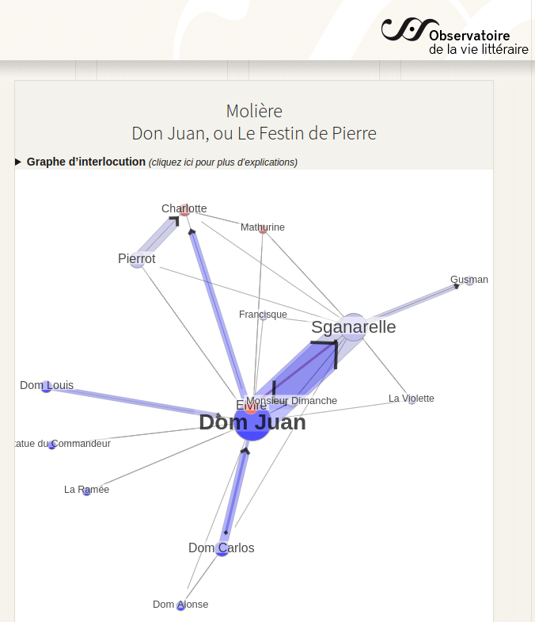

1 Positionnements
« Il y a partout
des forces qui constituent
des micro-cerveaux. »
(Deleuze & Guattari, 2005, p. 200)
« Le numérique est donc
à la fois ce qui est
autour de nous,
entre nous,
en nous »
(Bachimont, 2020)
Où suis-je ? Quels sont les textes fondateurs, les cadres épistémologiques, les influences et leurs ramifications qui constituent aujourd’hui mon milieu de connaissances et dans lesquels évoluent ma pensée ?
Pour répondre à ces questions nous explorerons les auteurs qui m’ont influencés, les paysages scientifiques que j’ai parcourus et qui m’ont amené à découvrir et cultiver mon écosystème de connaissances. Ce chapitre présente mon point de vue sur cet écosystème, c’est à-dire d’où je le regarde, avec quel niveau de précisions et pour en dire quoi. Nous donnerons une représentation de ce que je discerne dans la noosphère (Chardin & Tardivel, 1997; Morin, 1981) et comment j’y agis. Ce milieu de connaissances est composé par les documents que j’ai consultés au fil des années mais aussi par les personnes avec lesquelles les échanges intellectuels m’ont ouvert à de nouveaux espaces de connaissances. Le troisième élément qui compose cette environnement est constitué par les concepts qui ont émergé de mes expériences. Le quatrième élément est l’ensemble des rapports que je compose avec les documents, les personnes et les concepts.
Dans cette partie nous détaillerons notre parcours intellectuel depuis notre entrée à l’université jusqu’à notre thèse. Puis, nous exposerons les processus de veille que nous avons mis en place pour cultiver notre écosystème de connaissances. A partir des résultats de cette veille, nous montrerons quelles sont nos positions dans le domaine des sciences humaines et plus spécifiquement en science de l’information et de la communication en utilisant les principes de cartographie des connaissances que nous détaillerons plus loin Chapter 2.
1.1 Parcours initiaux
1De l’histoire de l’art aux sciences de l’information et de la communication mon parcours intellectuel m’a donné tout d’abord la chance de découvrir l’art et d’apprendre à voir par la pratique intensive des œuvres et leurs analyses complexes. Plus particulièrement, lors de mes recherches en maîtrise d’histoire de l’art sur la gravure au XVIIIe siècle j’ai analysé à travers une exploration des catalogues de ventes, comment un des premiers réseau de diffusion à grande échelle des images contribuait à l’histoire du goût. Ce premier travail de recherche m’a sensibilisé à l’importance des bases de données documentaires pour les recherches et ou outils nécessaires pour les exploiter efficacement. Sans le savoir à l’époque, je commençais mon exploration des humanités numériques que je continuais dans mon travail de DEA sur l’influence de John Cage en menant une première expérimentation sur la cartographie des affinités(Rodighiero, 2021). Cette recherche m’a fait découvrir quatre notions fondamentales des théories du chaos : les catastrophes (Thom, 1975), les objets fractals de Mandelbrot, les attracteurs étranges selon Ruelle et les structures dissipatives selon Prigogine (Gleick, 1999). Surtout, j’ai compris les rapports intimes entre ces notions et les sciences humaines à travers mes lectures simultanées de (Deleuze, 1988; Foucault, 1990; Guattari, 1992) et comment ces phénomènes relèvent de la complexité (Morin, 1981, 1985, 1992, 1995, 2001, 2006). De cette période date mes premières rencontres intellectuelles d’importances au centre Thomas More du couvent de la Tourette (Cavalin, 2017) où j’ai eu la chance de discuter avec Michel Serres, Regis Debray, Michel Pastoureau, Pascal Ory et les frères dominicains… C’est à cette période aussi que je mène mes premières expériences de générations hypertextuelles avec le logiciel Hypercard2 et que je découvre comment le chaos informatique est utile aux sciences humaines en ayant l’intuition d’une machine à stimuler les connaissances par une mise en situation synesthésique…

Curieux d’explorer plus précisément cette intuition, je me lance dans une thèse grâce à ma rencontre avec Jean-Pierre Balpe et Imad Saleh qui m’encouragent à travailler sur la conception d’agents autonomes pour générer des hypertextes adaptatifs. Trop autonome, je ne réalise pas à l’époque l’importance de travailler collectivement dans un laboratoire de recherche, je parts en voyage et mène mes recherches de manière solitaire jusqu’à ce que dix ans plus tard je retrouve Jean-Pierre et Imad. Fort de nouvelles expériences comme consultant spécialiste en système d’information et en développement Web (cf. Carrière privée), je reviens à l’université pour cette fois participer activement à la vie du laboratoire Paragraphe, tout d’abord comme conférencier puis chargé de cours et professeur contractuel. L’opportunité d’un contrat doctoral me permet de mener à bien une thèse sous la direction d’Imad Saleh et de m’inscrire pleinement dans une carrière universitaire que je mène comme Maître de conférence en science de l’information et de la communication depuis 2013.
L’atmosphère très fertile au sein de Paragraphe et les relations intenses que ce laboratoire entretient avec la communauté des sciences de l’information et de la communication, a stimulé l’engagement de mes recherches dans de multiples collaborations en France et à l’étranger Figure 2.6. Celles-ci m’ont permis de découvrir des milieux et des pratiques très diverses, par exemple en collaborant avec des institutions prestigieuses comme la Bibliothèque Nationale de France, les Archives Nationales ou l’INA, avec des programmes de recherche ANR comme Biolographes ou Aliento, avec des projets de recherches internationaux comme Arcanes, avec des groupes de recherches comme GENIC ou MANEP, avec des enjeux sociétaux importants comme celui de l’accessibilité, de l’écologie ou de l’éthique.
La participation dès l’origine à trois Projets d’Investissement d’Avenir (PIA) que sont le laboratoire d’excellence H2H, l’IDEFI CréaTIC et l’EUR ArTec, m’a donné la chance de découvrir des projets importants tout à la fois en terme de gouvernance de la recherche que de possibilité d’expérimentation. De même, mon implication dans les instances de l’Université Paris 8 en tant que membre du Conseil Documentaire du SCD, du conseil pédagogique de l’UFR STN et de la commission de spécialistes en Science de l’Information et de la Communication, me donne une bonne connaissance des rouages nécessaires et des difficultés qu’il faut surmonter pour que les activités de recherche et la vie des institutions se développent.
Grâce à ces activités, j’ai eu la chance de dialoguer avec de très nombreux chercheurs dont la liste complète serait trop longue à faire figurer ici mais que je remercie vivement pour ces conversations où l’échange de points de vue parfois très différents donnent à la recherche un goût à la fois subtile, surprenant et aventureux. Une première vision de ces relations est visible dans le diagramme ci-dessous qui montre l’évolution de mes productions scientifiques déposé dans HAL suivant deux catégories : celle des mots clefs utilisés pour décrire ces dépôts et celle des collaborateurs ayant participé à la production :

On le voit, l’essentiel des productions se font avec des collègues du Laboratoire Paragraphe notamment à cause des proximités géographiques mais aussi grâce aux affinités intellectuelles et aux perspectives communes. Toutefois, ce graphique est l’arbre qui cache une forêt beaucoup plus dense car il ne montre pas les relations que j’entretiens avec les collègues avec qui je partage des évènements scientifiques. De même concernant l’évolution des concepts en lien avec mes productions qui dans ce diagramme ne présente qu’une toute petite partie du paysage sémantique que j’explore. Je vous propose d’appronfondir cette exploration en explicitant mon parcours à travers quelques exemple de publications puis en analysant ce paysage à partir de ma veille informationnelle.
1.2 Mon parcours en Sciences de l’information et de la communication
Les sciences de l’information et de la communication ont pour but entre autres de concevoir, expérimenter et critiquer des modèles conceptuels permettant de quantifier l’information et de qualifier la communication. Ce double aspect des SIC est sans doute caricatural mais il pose à mon sens les deux pôles entre lesquels cette discipline est en tension. D’un coté nous avons dans la continuation de Shannon, Weaver et des technologies de l’information, une recherche sur les moyens de modéliser l’information pour fournir la matière nécessaire au développement de technologies stables. De l’autre coté, en relation avec les sciences humaines, nous avons dans la continuation des études en communication, une recherche sur l’analyse des pratiques d’échanges. Nous développons ces deux pôles des SIC dans nos enseignements et dans nos recherches.
Mon travail de thèse a été l’occasion de théoriser mes intuitions sur l’utilité de l’informatique et des langages formels pour le travail collectif en sciences humaines et plus spécifiquement dans les sciences de l’information et de la communication. A partir de cette thèse, des ouvrages et des articles qui ont suivis, j’ai élaboré une méthode générique pour la modélisation onto-éthique des écosystèmes de connaissances. Cette méthode s’articule autour d’un diagramme représentant quatre dimensions existentiels : matérielles Section 2.3, sociales Section 2.5, conceptuelles Section 2.4 et rapports Section 2.6. L’objectif est d’utiliser ce diagramme pour modéliser des « manières d’être » dans un espace-temps spécifique ou pour dire autrement de décrire un point de vue spécifique et ces évolutions dans un écosystème de connaissances.
Cette méthode de modélisation et d’analyse de l’information et de la communication est mise en pratique dans des cours et des projets de recherche. Les objectifs pédagogiques principaux de ces cours sont :
comprendre les principes de complexité,
abandonner la démarche d’exhaustivité au profit des choix nécessaires à la problématisation,
dépasser la difficulté de choisir le statut de l’information,
respecter des contraintes formelles par soucis d’interopérabilité.
Plusieurs projets de recherche m’ont permis d’expérimenter cette méthode pour laquelle j’ai conçu et développé des prototypes informatiques spécifiques. Ces expériences me sont très utiles pour évaluer en quoi la méthode est générique, compréhensible et utilisable ?sec-part-technoIntello.
De ces expérimentations un programme de recherche se dégage qui vise plusieurs objectifs. Premièrement diffuser le modèle onto-éthique en publiant des recueil de diagrammes composés dans les cours et les projets de recherche. Parallèlement, les applications développées pour la modélisation seront documentées et le code mis à disposition de la communauté des chercheurs et des développeurs. Le modèle sera aussi diffusé dans un séminaire de recherche sur la modélisation des connaissances en sciences humaines, ouvert aux chercheurs réalisant un corpus numériques et désirant employer des méthodes d’Humanités Numériques innovantes. L’objectif est d’accompagner les chercheurs pour modéliser des recherches en humanités numériques en diffusant des bonnes pratiques et des outils efficaces. Deuxièmement, développer des outils intellectuels pour cartographier les connaissances en concevant des interfaces simples et modulaires pour :
calculer la complexité de points de vue,
cartographier le flux d’information et de communication,
modéliser graphiquement une existence informationnelle dans un écosystème de connaissances,
stimuler des explorations cognitives en générant des frayages intellectuels,
recommander des conversations créatrices.
Pour illustrer cette démarche nous présentons ci-dessous un résumé des publications et des projets qui nous semble les plus représentatifs de notre parcours.
1.2.1 Écosystème de connaissances, méthode de modélisation et d’analyse de l’information et de la communication
A destination des étudiants de Master, cet ouvrage(Szoniecky, 2017) présente les principes de base de la méthode que j’ai conçu pour modéliser et analyser l’information et la communication. J’y présente dans une première partie l’intérêt de concevoir l’information et la communication en tant qu’écosystème et les principes fondamentaux de modélisation qu’on en déduit. La deuxième partie est une mise en pratique des principes théorique à travers des exemples concret d’usages de la méthode.
1.2.2 Métamorphoses et hybridations d’une archive numérique pour sa valorisation: Vers des écosystèmes de connaissances
Cet article (Szoniecky, 2019) présente un projet de recherche mené dans le cadre d’un atelier laboratoire CreaTIC pour expérimenter le développement d’une intelligence collective entre les étudiants de l’université Paris 8 et les millions de documents conservés dans les bâtiments de Archives Nationales. L’article montre comment décrire un processus de numérisation en terme de métamorphose et d’hybridation d’un écosystème de connaissance. Il présente des outils pour un « culture intensif » de l’information et un prototype développé dans le cadre de ce projet pour « le jardinage collectif des connaissances ».
1.2.3 Espace liminaire de l’authenticité: Une démarche d’humanités numériques
L’activité automatisée de production de faux, tels que les fake news et le deepfake, engendre des répercussions dans l’espace social tangible et concernent les relations de confiance que nous construisons quotidiennement avec l’information qui nous parvient. Cet article (Bourassa, Larrue, Godin, & Szoniecky, 2019) traite de la transformation de l’espace de médiation et cherche à comprendre la redéfinition actuelle et futures des notions d’authenticité et d’autorité liées à l’accord de la légitimité. Il porte aussi sur le dialogue performatif des données et des actions collectives d’utilisateurs.
1.2.4 Knowledge Design in the Internet of Things : Blockchain and Connected Refrigerator
L’Internet des objets fait partie de notre vie quotidienne, mais de nombreux utilisateurs ne comprennent pas les relations de ces objets avec les réseaux numériques, ni les données qui transitent à partir des usages qu’ils en font. Dans cet article (Szoniecky & Toumia, 2019), nous supposons que les représentations dynamiques et interactives du pouvoir d’action des utilisateurs et des objets sont des moyens de mieux comprendre de quoi ces dispositifs sont capables. Pour ce faire, nous concevons une conception sécurisée et respectueuse de la vie privée des connaissances dans l’environnement des objets connectés. Nous analysons l’exemple d’un réfrigérateur connecté pour comprendre comment utiliser la Blockchain pour développer des Innovations Sociales Numériques.
1.2.5 Conception d’un crible pour mesurer collectivement les impacts écologiques de l’activité
Cet article (Szoniecky, 2020) présente une méthode pour concevoir un dispositif générique de métrologie citoyenne que nous appelons crible et dont nous étudions la conception dans le contexte de l’écologie de l’activité, plus précisément dans l’exemple de la consommation d’avocat. Cette conception s’appuie sur une modélisation éthique de l’activité faisant référence à [Guattari (1989); Deleuze (1988); µ, Edeline, & Klinkenberg (2015); Citton (2008)](Berque, 2009; Descola, 2005) et s’appuyant sur les exigences qu’une telle démarche implique pour la gestion des données. Le crible en tant qu’interface entre objectivité et subjectivité offre une analogie opératoire pour explorer les conséquences de l’activité à partir d’un modèle simple d’écriture et de lecture basée sur la formule logique sujet – objet - prédicat contrainte par l’ontologie éthique : physicalités, acteurs, concepts, rapports.
1.2.6 Projet LITTE_BOT
Le projet LITTE_BOT (Pappa et al., 2023; Quach et al., 2022) consiste en la création d’un chatbot théâtral incarnant Dom Juan à l’occasion du 400ème anniversaire de la naissance de Molière, présenté pour l’exposition “Molière, le jeu du vrai et du faux” que lui ont consacrée la BnF et la Comédie Française. fin 2022. A l’origine de ce projet, Rocio Berenguer, une dramaturge, s’est rapprochée de la BnF pour récupérer un corpus pour créer un chatbot littéraire. Le projet Gallica Studio, aujourd’hui terminé, encourageait la réutilisation des contenus de Gallica, dont la plupart sont dans le domaine public, tout en invitant à l’expérimentation de nouveaux usages rendus possibles par les technologies émergentes. En l’occurrence, explorer la médiation vocale rendue possible par les chatbots et expliquer cette technologie au grand public. En collaboration avec Anna Pappa, nous avons apporté notre expertise scientifique pour faire du chatbot une réalité, dans le cadre d’un appel à projets de l’EUR Artec.
L’objectif était de créer un chatbot ouvert capable d’incarner le Dom Juan de Molière. Le défi technique était de créer une base de données suffisamment grande pour entraîner le modèle de langage séquence à séquence. Les modèles linguistiques actuels sont formés avec des corpus contemporains. Pour notre projet, nous devions construire de toutes pièces une base de données qui permettrait à une intelligence artificielle d’imiter le Dom Juan de Molière, de parler le français du XVIIe siècle et de comprendre le français actuel parlé par son interlocuteur.
La base de données pour la formation du chatbot est non seulement indispensable, mais aussi la partie la plus importante de ce projet. Dans un premier temps, j’ai travaillé sur l’analyse sémantique du corpus Molière disponible sur Gallica grâce à un précédent partenariat de recherche entre la BnF et le laboratoire OBVIL de la Sorbonne. La mise à disposition de ce corpus des textes de Molière dans un format manipulable par des machines (https://obvil.sorbonne-universite.fr/corpus/moliere/moliere) permet d’envisager de multiple réutilisation de ces textes pour des usages innovants. Par exemple, l’Obvil analyse les relations entre les personnages d’une pièce de théâtre pour visualiser l’importance de leurs relations :

Pour ce projet nous avons analysé la structure du corpus (pièces de théâtre, actes, scènes, répliques, phrases, mots-clés) pour créer des éléments dans une base de données Omeka S correspondant à chacune de ces structures et à leurs relations. Pour ce faire nous avons développé un module générique 3 d’importation des pages HTML qui à partir d’un fichier de configuration4 sélectionne les éléments de la page et les enregistre dans la base Omeka S en détaillant leurs relations. Nous avons importer toutes 5 pour obtenir une base de plus de 100 000 items. Ce travail d’hypertrextualisation permet d’explorer la base de données et d’enrichir les éléments qui la compose et dont voici la représentation :
Nous souhaitions travailler précisément les répliques du théâtre de Molière afin de les rendre génératives en suivant le modèle des générateurs de Jean Pierre Balpe Section 4.3.4. et ainsi disposé d’un générateur automatique de répliques de Molière pouvant servir à l’entrainement du chatbot. Malheureusement, nous n’avons pas trouvé les ressources nécessaires pour faire ce travail en détail. Nous avons privilégié une approche plus rapide en indexant manuellement les répliques selon des étiquettes correspondant au scénario suivi par le chatbot. En réalité, LITTE_BOT combine deux chatbots : un chatbot ouvert basé sur le modèle Seq2Seq et un chatbot scénarisé, aux lignes indexées.
Cette pratique de la scénarisation des chabots reste aujourd’hui la plus répandue car elle permet de maîtriser précisément le processus de dialogue entre les utilisateurs et les bots. Comme le confirme les indexations manuelles par micro-tâches faites pour rendre ChatGPT opérationnel ou le chatbot Chomsky VS Comsky
1.2.7 Projet Polemika6
Polemika a été financé par les Trophées franciliens de l’innovation numérique dans le supérieur (Trophées EdTech) et l’EUR ARTeC (Ecole Universitaire de Recherche). Ce projet visait à développer un générateur automatique d’arguments pour l’éducation à l’esprit critique. S’appuyant sur des travaux menés au laboratoire Paragraphe (Balpe, 2002; Szoniecky, Balpe, & Reyes, n.d.; Szoniecky, Hachour, & Bouhai, 2012) sur un générateur automatique de texte, nous disposions d’une infrastructure pré-existante, pour la génération automatique de structures textuelles. Partant du constat de la généralisation du phénomène des fake news, et dans le contexte numérique Polemika vise à générer des contre-arguments mais aussi de l’absurde, des caricatures, des exagérations, voire des fake news, afin de travailler les compétences d’esprit critique par la pratique, de manière ludique et interactive. Une des hypothèses consiste à observer si à travers la répétition de la mise en œuvre d’opérations de prise de distance, de prise de recul lors de la confrontation itérative à des énoncés plausibles, mais faux, ou à des énoncés absurdes ou caricaturaux, générés par Polemika, on parviendrait à augmenter la qualité des critiques réalisées sur les énoncés, mais également à diminuer l’impact émotionnel, à travers un processus « d’habituation » et d’éducation, qui vise à porter les publics à aller vérifier l’information plutôt que de commencer par réagir émotionnellement.
Ce projet est à la croisée interdisciplinaire de plusieurs champs de recherche et d’expertises : pédagogie et sciences de l’éducation, psychologie, informatique et sciences de l’information. Nous l’avons donc mené avec des chercheurs de ces différentes spécialités mais le fondement disciplinaire s’inscrit en SIC notamment parce que les travaux sur l’EMI, l’Information Literacy et l’esprit critique sont bien ancrés en SIC. Parmi les dispositifs d’éducation à la pensée critique, les jeux sérieux tiennent une place particulière du fait de la possibilité de toucher un nombre important d’individus et, grâce à la dimension ludique de les fidéliser et ainsi d’engager les participants dans l’acquisition de compétences approfondies. On peut distinguer deux grandes approches. La première consiste à confronter les participants à des fake news en leur apprenant à identifier les critères pertinents de détection des fake news en évaluant notamment la source et la cohérence du contenu. Ce type d’approche s’avère insuffisant car (1) la répétition de fake news favorise un sentiment de familiarité qui à son tour augmente la crédibilité; (2) les corrections sont souvent inefficaces car les gens continuent à se fier à leur première évaluation notamment parce que le registre de la contre argumentation n’est pas le même que celui sur lequel la conviction a été construite. La seconde approche s’appuie sur l’analogie biologique de “l’inoculation”. Elle consiste à enseigner aux participants à faire des fake news pour renforcer la résilience face à celles-ci. Par exemple, le jeu FakeYou entraîne les joueurs à générer leurs propres faux titres et ainsi les familiariser avec les procédés de formulation de fake news convaincantes. Leurs résultats montrent une diminution de la sensibilité (habituation) aux fake news, mais montrent également que les utilisateurs privilégient des procédés spécifiques pour générer des fausses nouvelles. De notre point de vue, ce n’est pas la création, mais la plus grande implication des sujets qui explique la diminution de la sensibilité aux fake news. Notre proposition est à mi-chemin de ces deux approches. Il ne s’agit cependant pas d’une simple exposition à des fake news puisque dans ce projet les joueurs pourront “dialoguer” avec le dispositif, lequel pourra jouer sur les niveaux émotionnels et les mondes sociaux développés. Nous avons mené à bien ce qui pouvait l’être dans les conditions du Covid. Tout le volet expérimental en présentiel et événementiel a dû être annulé.
1.2.7.1 Prototypes réalisé pour Polemika
Dans le cadre de ce projet nous avons conçu et développé plusieurs prototypes afin d’expérimenter nos hypothèses. Le diagramme ci-dessous montre l’écosystème de connaissances que nous avons conçu pour le développement des prototypes.
1.2.7.1.1 Générateur automatique de texte
Sur la base des travaux menés avec Jean-Pierre Balpe sur les générateurs automatiques de texte, nous avons développé une nouvelle version du générateur qui utilise Omeka S comme système de gestion des données en intégrant l’interopérabilité sémantique du Linked Open Data (LOD) et des modules spécifiques pour la manipulation et le paramétrage des algorithmes génératifs.
1.2.7.1.1.1 Première version : GenLOD
Cette première version reprend intégralement les principes des générateurs balpiens notamment les dictionnaires de concepts (494838 items) et les algorithmes de cohérence des syntaxes. Cette version a été développée sous la forme d’un module Omeka S en collaboration avec Daniel Berthereau. Les données disponibles sont consultable ici : https://jardindesconnaissances.univ-paris8.fr/genlod/omk/s/donnees-disponibles/item . Le code source est accessible ici : https://github.com/samszo/omeka-s-module-generateur .
Outre les générateurs balpiens, GenLOD met à disposition de nouveaux types de générateurs.
- Générateur SPARQL
Ce générateur utilise les capacités des requêtes SPARQL pour récupérer des données aléatoires sur un sujet très précis dans les bases de données du LOD.
- Générateur IEML
Ce générateur utilise les capacités génératives du langage d’adressage des concepts IEML pour obtenir des données liée sémantiquement avec un concept donnée. https://pierrelevyblog.com/2021/09/20/pour-un-changement-de-paradigme-en-intelligence-artificielle/
- Générateur Wikidata
Ce générateur utilise un lien sémantique avec les données de Wikidata pour alimenter le générateur avec données liées.
- Générateur Synonyme
Ce générateur utilise la base de données de synonyme et d’antonyme mis à disposition par le Crisco pour augmenter les capacités génératives des concept tout en conservant une cohérence sémantique. https://crisco2.unicaen.fr/des/
Le générateur GenLOD est encore un prototype dont il faut améliorer les performances et l’ergonomie de ses usages. Toutefois, il nous a permis de poser les principes fondamentaux d’un générateur utilisant les fonctionnalité du Web sémantique et du LOD.
1.2.7.1.1.2 Deuxième version : jardin des connaissances
La deuxième version du générateur automatique de texte utilise les principes des écosystèmes de connaissance pour concevoir une interface graphique de jardinage de l’information afin d’améliorer les performances et l’ergonomie du prototype GenLOD. Il a été développé sous la forme d’un module Omeka S : https://github.com/samszo/Omeka-S-module-JDC
Ce générateur toujours à l’état de prototype semble être une voie prometteuse pour rendre accessible à un plus grand public l’utilisation des générateurs.
1.2.7.1.2 Interface de cartographie des arguments
Afin de paramètrer le plus finement possible les générateurs à partir de nos hypothèses de recherches, nous avons conçu et développé des outils pour la cartographie des arguments.
1.2.7.1.2.1 Visualisation CMap dans Omeka S
Le premier prototype que nous avons réalisé se base sur nos pratiques d’un outils de cartographie conceptuelle : CMAP Tools https://cmap.ihmc.us/ Nous utilisons cette outils pour rapidement construire des cartes conceptuelles et les mettre à disposition des collègues et des étudiants. Toutefois, il ne permettais pas une intégration fine avec les données stockées dans Omeka S. Nous avons donc développé : - un module pour importer les données des cartes sémantique CMAP dans Omeka S afin de travailler plus finement les concepts présents dans la carte notamment en les mettant en relation avec les différents générateurs développés. Le code du module est accessible ici : https://github.com/samszo/Omeka-S-module-CmapImport - une interface de visualisation des cartes à partir des données importées :
Cette première version nous a montré l’importance de ce type d’outils pour la suite du projet nous avons donc décidé de développé une version plus dynamique et intéractive de l’interface de consultation des cartes conceptuelles.
1.2.7.1.2.2 Editeur de cartographie sémantique
Cette éditeur de cartographies conceptuelles fonctionne à partir des données provenant d’une carte CMAP mais aussi de manière autonome. Il permet de gérer graphiquement la lecture, l’écriture, et la mise à jour des cartes à la fois dans le positionnement des éléments la constituant, le style de chaque élément à partir d’archétypes graphiques, l’enrichissement des concepts directement dans la base de données Omeka S. L’éditeur est composé : - d’un thème Omeka S accessible ici : https://github.com/samszo/Omeka-S-theme-PolemikaProto - d’un module Omeka S de cartographie des affects accessible ici : https://github.com/samszo/Omeka-S-module-CartoAffect - d’un l’éditeur graphique utilisable ici : https://polemika.univ-paris8.fr/omk/s/seconds-prototypes/page/editeur
1.2.7.1.3 Catégorisation des informations
Parallèlement au travaux menés lors du hackathon à la cité des sciences et de l’industrie et lors des enquêtes en psychologie, nous avons développé trois prototypes de catégorisation des fakes news afin d’étudier en quoi un dispositif numérique permettrait de mieux comprendre les processus cognitifs à l’oeuvre dans la réception des informations. De plus, ces prototypes nous ont permis de valider ou pas nos hypothèses ergonomiques.
1.2.7.1.3.1 Catégorisation par roue
Ce premier dispositif met en parallèle deux informations, une visuelle et une textuelle. Les utilisateurs doivent catégoriser ces informations à l’aide d’une roue qui déploie des concepts organisés hiérarchiquement suivant une taxonomie conçue à partir de la catégorisation des mondes sociaux(Desfriches Doria & Meunier, 2021a).
Le dispositif a été développé sous la forme d’une application Web autonome (https://github.com/samszo/polemika) puis intégré à Omaka S sous la forme d’un thème spécifique : https://github.com/samszo/polemika_omks_theme_polemika
Le fonctionnement de ce processus de catégorisation est :
visible dans cette vidéo : https://polemika.univ-paris8.fr/omk/s/contenus/page/processus-de-categorisation
utilisable dans cette page : https://polemika.univ-paris8.fr/omk/s/prototypes/page/qualification
L’interface développée n’est pas très ergonomique notamment au niveau de la lisibilité des textes quand ils sont trop longs. De même, la multiplication des clics rend le travail de catégorisation plutôt laborieux.
1.2.7.1.3.2 Catégorisation par validation des cohérences
Ce second dispositif met lui aussi en relation deux informations mais cette fois la représentation visuelles est mise en rapport avec un réseau de concepts issu de la classification des mondes sociaux. Le processus de catégorisation consiste à évaluer la cohérence entre la photographie et le réseau de concept suivant une échelle allant de “sans rapport” à “important”. Pour faciliter le travail de catégorisation, une minuterie permet de changer automatiquement la photo ou le réseau de concept. Le fonctionnement de ce processus de catégorisation est : - visible dans cette vidéo : https://polemika.univ-paris8.fr/omk/s/contenus/page/categorisation-par-validation-des-coherences - utilisable dans cette page : https://polemika.univ-paris8.fr/omk/s/prototypes/page/rapports-mondes
1.2.7.1.3.3 Catégorisation émotionnelle
Ce processus de catégorisation utilise un jeu sérieux pour capter les émotions produites par la consultation de fake news et visualiser ensuite le résultat de cette évaluation pour la corriger et en faire une analyse précise. Le fonctionnement de ce processus de catégorisation est : - visible dans cette vidéo : https://polemika.univ-paris8.fr/omk/s/contenus/page/categorisation-emotionnelle - utilisable dans cette page : https://polemika.univ-paris8.fr/omk/s/emotions/page/welcome

1.2.8 Projet Arcanes7
Le projet vise à étudier les régimes d’authenticité prenant place dans une ère de post-vérité, soit les transformations des systèmes de vérité, d’autorité et de légitimité à l’œuvre dans les dynamiques de médiations contemporaines. Les objets de recherche visés, abordés de façon intermédiale, sont situés à la fois dans la sphère des « arts trompeurs «, soit des arts recourant à la fois aux pratiques illusionnistes et aux modes fictionnels en utilisant des stratégies de tromperie, et dans celui des techniques de persuasion ou de manipulation intervenant dans l’espace communicationnel actuel. Les deux modes activent les « puissances du faux » . Ils suscitent des imaginaires sociaux qu’il s’agira d’étudier en les mettant en relation pour mieux en exposer les rouages.
Nos objectifs sont les suivants :
Mener de façon interdisciplinaire une réflexion théorique en profondeur sur notre thème de recherche afin de développer une meilleure compréhension des mécanismes en jeu à la fois dans les arts trompeurs et dans l’espace informationnel qui seront significatives afin d’augmenter la littéracie numérique pour les clientèles visées (communauté universitaire et grand public).
Repérer, documenter et analyser les œuvres ainsi que les phénomènes de médiation contemporains relatifs à la question de l’authenticité, selon la perspective de l’intermédialité et de l’archéologie des médias, afin d’en retracer les filiations historiques et de mieux comprendre en retour leurs enjeux actuels.
Concevoir et développer un dispositif d’éditorialisation innovant dans le sillon des Humanités numériques, soit un écosystème de recherche à partir des avancées et des méthodes du Web sémantique afin de rendre compte de nos processus de recherche et résultats.
1.2.8.1 Contexte
Ce projet se situe dans le contexte plus large des travaux du groupe de recherche international Les arts trompeurs : Machines, magie, médias. Active depuis 2015, cette communauté regroupe plus de 150 chercheurs provenant d’une pluralité de disciplines et se consacrant aux pratiques illusionnistes au cinéma, dans les arts vivants et les arts numériques, ainsi qu’aux processus de fictionnalisation utilisés dans ces pratiques et en littérature. Ce projet se situe également dans le prolongement d’une subvention développement savoir du CRSH (Du spectacle magique au numérique -SMEL, 2018-2020) qui centrait l’analyse sur les phénomènes de médiation actifs dans le spectacle de magie, autour de la figure-phare d’Houdini, à partir des archives inédites du Musée McCord. Il s’agissait par la suite de comparer deux moments de médiation charnières (débuts XXe et XXIe siècles) par des allers-retours permettant d’éclairer les phénomènes contemporains de désinformation (Bourassa et als 2019b). Ces premiers travaux ont confirmé toute la richesse et la profondeur de la question de l’authenticité pour la recherche ainsi que ses impacts majeurs dans les dynamiques de médiation contemporaines dans l’espace public. Le présent projet marque une nouvelle étape décisive dans cette réflexion afin d’approfondir notre compréhension du phénomène, par une étude plus détaillée des « puissances du faux », en l’élargissant à d’autres corpus et études de cas, tout en plaçant le phénomène en relation avec ses filiations historiques pour mieux en comprendre, en retour, les enjeux contemporains. Cette nouvelle étape sera aussi marquée par une avancée importante sur le plan méthodologique, où nous poursuivrons les développements amorcés dans SMEL pour l’exploitation des données ouvertes (Linked Open Data) et des technologies du Web sémantique.
La diversité des champs que nous couvrons, des arts de la représentation au Web sémantique, ainsi que nos origines disciplinaires variées (design, cinéma, littérature, histoire de l’art, théâtre, génie informatique et Humanités numériques) fondent le caractère multidisciplinaire de ce projet. Cette approche interdisciplinaire autour des questions relatives à l’authenticité en relation aux dynamiques de médiation fonde également toute son originalité, car elle permet de croiser des sphères de réflexion dans leur interdépendance, en évitant d’isoler les phénomènes médiatiques à l’étude les uns des autres, conformément à notre approche méthodologique basée sur l’intermédialité.
1.2.8.2 Axe d’éditorialisation numérique : développement d’un écosystème de connaissance
Dans ce projet j’ai particulièrement développé cet axe qui consiste à adopter des méthodes d’Humanités numériques (HN) au moyen des techniques du Web sémantique afin de rendre interopérables et calculables les données récoltées et produites par la recherche. Un moissonnage automatique de données (requêtes SPARQL) sera développé pour agréger et structurer des contenus qui serviront de base au travail d’analyse des chercheurs. En back end, l’écosystème sera soutenu par le CMS OmekaS (données RDF natives et ontologies). Il inclura notamment des modèles de carnets de recherche et de publication permettant la diffusion continue de la recherche ainsi que l’activation de la communauté des Arts trompeurs sous le mode de la conversation. Nous étendrons ce système par des techniques d’intelligence artificielle pour la recherche automatisée, afin d’investiguer plusieurs bases de données de façon croisée, en transcendant les silos de données. Afin de générer et d’analyser nos données, nous implanterons des méthodes de visualisation pour en effectuer une modélisation dynamique en mettant à profit les principes cartographiques de la prétopologie (Levorato, 2008; Thibault, 2017) . Cette modélisation révélera des dynamiques de proximité et d’éloignement qui nous permettront de représenter, de suivre et d’analyser les multiples jeux de position (et les points de vue) qui définissent les régimes d’authenticité et participent à leur transformation.
Ces publications et ces projets donnent un bon aperçu de mon parcours depuis ma thèse mais présentons maintenant de manière encore plus précise mon écosystème de connaissances à partir des résultats de ma veille informationnelle.
1.3 Processus de veille pour créer un écosystème de connaissances
Depuis une quinzaine d’années, je mène un veille active pour à la fois trouver, filtrer, organiser et diffuser les informations pertinentes pour mes travaux de recherche et d’enseignement. Au fil du temps, j’ai mis en place un processus spécifique pour effectuer cette tâche le plus efficacement possible. Ce processus s’inspire des pratiques professionnelles (Andro, Bondu, Dupin, & Deschamps, 2022) que j’adapte pour consacrer à ce travail une matinée par semaine.
1.3.1 Sélectionner des sources
La première étape de ce processus de veille consiste à sélectionner des sources d’informations qui me semble pertinentes pour explorer un domaine de connaissances. Pour ce faire, j’utilise principalement deux types de sources : des e-mails et des flux RSS.
J’utilise les e-mails pour recevoir périodiquement des informations soit en m’abonnant à des newsletters8 et des forums9, soit en utilisant le services d’alertes proposé par Google, Google Scholar et HAL10. Pour les alertes, j’en ai paramétré une cinquantaine portant soit sur des noms de chercheur soit sur des concepts. La veille sur les noms de chercheur permet de connaître les nouvelles publications de cette personne mais aussi comment il est cité par d’autres chercheurs. Les alertes sur les concepts donne une bonne idée de l’activité informationnelle dans un domaine. J’utilise aussi le service de CAIRN pour recevoir automatiquement les nouvelles parutions des revues scientifiques qui m’intéresse.
Pour consulter les flux RSS11 que j’ai sélectionnés, j’utilise l’agrégateur de flux Netvibes12 qui permet une lecture rapide des flux à partir du titre des articles. Notons que la durée de vie d’un flux RSS est relativement limité puisque sur le 180 flux que j’ai sélectionnés plus de la moitiés ne sont plus opérationnels. Par exemple, le site d’Amazon ne met plus à disposition de flux RSS pour suivre les parutions d’ouvrage dans un domaine spécifique.
1.3.2 Filtrer les informations
La deuxième étape du processus de veille consiste à filtrer les informations que les sources transmettent. Comme je reçois beaucoup d’information des sources, le filtrage doit être rapide. Pour ce faire, j’utilise un navigateur Web pour à la fois consulter les informations fournies par les sources et accéder aux détails de celles-ci. Le premier filtre se fait par une lecture des titres et parfois du résumé afin de déterminer si l’information est pour moi pertinente ou pas. Si elle l’est, j’active le lien hypertexte pour ouvrir dans un nouvel onglet les détails. Quand j’ai fini la lecture de la source, je consulte les onglets ouverts pour confirmer le filtrage et le cas échéant annoter cette nouvelle référence.
1.3.3 Annoter les références
L’étape d’annotation des références est très importante car elle consiste à enregistrer les informations pour enrichir ma base de connaissances. Pour effectuer cette troisième étape du processus, j’utilise deux outils complémentaires. Pour ce qui concerne les données bibliographiques non numérisées, j’ai fait le choix de Zotero pour enregistrer les références de la données et les annoter avec une liste de mots clefs et des citations du document dans des notes. Notons que Zotero ajoute automatiquement des mots clefs lorsque ceux-ci sont précisés dans les métadonnées du document. Concernant les données du Web, j’utilise l’outil d’annotation Diigo13 pour non seulement enregistrer l’URL d’un document Web mais aussi le décrire avec des mots clefs, surligner avec différentes couleurs une partie du document pour l’extraire et la commenter, faire des copies d’écran pour conserver une partie de la page visualisée.
En terme d’indexation, cette étape d’annotation enregistre les rapports entre des informations physiques concernant les références d’un document et de ses parties, des informations conceptuelles à travers les mots clefs utilisés, des informations sur l’actant qui fait l’annotation à un moment donnée.
1.3.4 Utiliser les annotations
L’usage le plus fréquent que je fais des annotations consiste à référencer nos écrits scientifiques en utilisant des URLs ou des données bibliographiques que j’intégre directement dans le texte grâce au connecteur Zotero14, comme c’est le cas dans ce travail. Les références enregistrées dans ma base de connaissances se retrouvent facilement en faisant une recherche par mot clef ou en plein texte. Les résultats de ces recherches donnent une liste de documents dont les annotations font office de résumé. En visualisant les mots clefs utilisés et les parties sélectionnées, il n’est plus nécessaire de consulter l’intégralité du document. Par exemple, voici la page d’annotation d’un article dans Diigo :

Cette copie d’écran montre les parties de l’article que j’ai sélectionnées (marge jaune) et les notes que j’ai prises pour la sélection (marge grise). En ce référent à cette page d’annotation, il est pratique de retrouver rapidement ce qui m’a semblé pertinent et pourquoi15.
Un autre usage particulièrement intéressant des annotations est la conservation des références qui ne sont plus accessibles en ligne et qui représente dans notre corpus plus de 10 % des URL (cf. ci-dessous). Lorsque nous importons les annotations Web depuis Diigo vers ma de base de connaissances Omeka S Section 9.1.4.2.1, je teste la validité de l’URL et enregistre son statut16 ce qui permet de savoir quelles URL sont obsolètes :

L’usage le plus intéressant de cette base de données d’annotations est sans doute leurs analyses pour une gestion des connaissances personnelles (Deuff, 2012) et la cartographie d’un milieu de connaissance qui est l’objet de ce travail.
De manière plus expérimentale, nous utilisons ces annotations pour développer de nouvelles formes d’éditorialisation scientifiques en puisant dans cette base de données la matière d’une inspiration chaotique Section 9.1.5.
1.3.5 Diffuser les annotations
Ce travail d’annotation et de sélection de citation me fourni une base de connaissances de plus de 1 400 références bibliographiques et plus de 19 000 références Web qui sont indexées par plus de 6 000 concepts. L’ensemble de ces données sont accessibles soit sur les Zotero pour les références bibliographiques17, soit sur Diigo pour les références Web18, soit directement dans mon site Omeka S dans un format HTML pour naviguer dans la base de données ou en JSON19 pour analyser les données avec des algorithmes.
1.3.6 Réfléchir le processus
Le processus que nous venons de décrire évolue constamment, tend à s’améliorer, se préciser au fil du temps et s’enrichir de nouvelles pratiques. Par exemple, une analyse automatique de l’adéquation entre les sources d’information, les données filtrées, les annotations et leurs utilisations dans des travaux scientifiques ou pédagogiques, pourrait servir de base pour un système de recommandation (Hachour, Szoniecky, & Abouad, 2014).
Toutefois, le fait que les étapes du processus soient principalement manuelles contribue à construire une subjectivité qui m’est propre. Chaque décision nécessaire pour la poursuite du processus est prise parce qu’au moment du choix elle correspond aux inclinaisons de ma « raison trajective » Figure 2.1 . En enregistrant ces décisions via des dispositifs numériques, le processus de veille offre dès lors un triple intérêt. Premièrement, il permet d’explorer rationnellement une domaine de connaissances. Deuxièmement, elle trace un frayage (Citton, 2010) particulier dans un écosystème de connaissances qui crée les conditions d’une communication stigmergique :
« L’étymologie grecque explique assez bien le sens du mot « stigmergie » : des marques (stigma) sont laissées dans l’environnement par l’action ou le travail (ergon) de membres d’une collectivité, et ces marques guident en retour – et récursivement – leurs actions. » (Lévy, 2023)
Troisièmement, il donne une représentation d’une subjectivité et de ces évolutions ce qui conditionne le développement de la réflexivité et de l’esprit critique (Desfriches Doria & Meunier, 2021b).
Entre l’automatisation du processus et les choix manuels, il convient donc de pratiquer le bon équilibre entre alléger le travail et construire son esprit critique ?sec-part-technoIntello.
1.4 Cartographie existentielle de mon écosystème de connaissances
A partir du processus de veille que nous venons de décrire, j’ai constitué une base de connaissances qui reflète de manière très précise mon environnement scientifique et intellectuel. Pour faciliter le traitement des données de cette environnement nous les avons centralisées dans Omeka S qui représente une base de données SQL de 75 tables peuplées par plus de 2 000 000 de lignes20. Le graphique ci-dessous présente la répartition des objets disponibles dans cet écosystème suivant leur classe21 :
Le graphique montre que les deux tiers des objets dans l’écosystème sont des annotations (61 120 = 60 %) qui créent un rapport entre un document, un actant et un concept. Nous retrouvons ici le 4 dimensions du modèle que nous utilisons pour modéliser les connaissances (Section 5.0.2) : document, actant, concept, rapport. Plus précisément, la dimension physique (documentaire) est composée essentiellement de pages Web (19 491 items = 19 %22), des citations (8 994 = 9 %), de médias (3 427 = 3 %), des notes (1 488 = 1 %) et des livres (568 = 1 %) issues de notre processus de veille. Les autres dimensions de l’écosystème sont les concepts (6 266 = 6 %) et les personnes (1 898 = 2 %) associées aux actants (500 = 0,5 %). Le graphique ci-dessous montre cette répartition des objets suivant les dimension existentielles :

Cette représentation suivant la classe des objets sous estime la complexité de l’écosystème puisqu’elle ne prend pas en compte le détails des valeurs (dimension physique) de chaque propriété (dimension concept) ni l’actant qui exprime les rapports entre propriétés et valeurs, encore moins l’évolution de cette complexité au fur et à mesure que l’écosystème se transforme. Pour une meilleur compréhension de l’écosystème, nous considérons chaque donnée comme une existence particulière qui possède ça propre complexité qui s’ajoute à la complexité de l’ensemble. Cette complexité de l’objet est d’autant plus grande que la valeur d’une propriété est une ressource sous la forme d’une URI vers une page Web ou un lien vers une autre existence de l’écosystème est donc vers une nouvelle complexité qui elle aussi s’ajoute à la complexité globale. A partir des règles génériques pour calculer la complexité existentielle d’un écosystème (Section 5.0.3), nous obtenons pour l’écosystème de connaissances de ce travail une complexité de 38.4589 Millions, ce qui est très important en comparaison de la complexité d’une citation d’ouvrage qui varie entre 60 et 3 000 mais ce qui est très peu par rapport à la complexité d’une bibliothèque, de wikipédia ou d’une IA générative comme ChatGPT (Section 13.4). Ce chiffre prend en compte l’ensemble des existences informationnelles qui peuplent notre base de connaissance, il nous est utile pour comparer les connaissances potentielles de ces existences dont on peut représenter la répartition suivant leur niveau de complexité (abscisse) et le nombre d’existence pour chaque complexité (ordonné) :
Ce graphique montre que la complexité des existences est très diverse puisqu’elle s’établit entre 1 et presque 3 Millions, de même concernant le nombre d’existence ayant la même complexité qui oscille entre 1 et plus de 10 mille. Une analyse des répartitions suivant le type de ressource omeka (media, item, collection, annotation) montre que les ressources les moins complexes sont les médias avec une complexité inférieure à 12 et les plus complexes sont bien évidemment les collections car elles cumulent les complexités des ressources qui la compose.
Il reste encore de nombreuses travaux de recherche à faire sur cet écosystème de connaissances, ces évolutions, les moyens de les modéliser et de les analyser. Nous détaillerons plus loin les principes de cartographie des connaissances que nous avons élaboré à partir de cette écosystème Chapter 2 et le programme de recherche que nous souhaitons développer Chapter 3 . Mais pour le moment focalisons-nous sur un aspect particulier en analysant les personnes présente dans l’écosystème.
1.5 Les personnes de mon écosystème de connaissances
L’écosystème de connaissances que j’ai constitué à partir de mon travail de chercheur et d’enseignant compte plus de 2 000 personnes. Parmi cette foule, j’entretiens des rapports très différents avec chacune des personnes, certaines sont des amies, d’autres des collègues ou des auteurs que j’ai lu sans jamais les rencontrés… De plus, ces rapports évoluent dans le temps au fil des rencontre intellectuelles et amicales. Pour décrire ces relations, nous pourrions nous inspirer des propositions de Gabrielle Tarde (Citton, 2008) pour réaliser une économie des affects à partir de trois registres : les « valeurs-utilités », les « valeurs-vérités » et les « valeurs-beautés. Nous verrons en détails Section 2.8 comment à partir de ces propositions concevoir une cartographie des affects mais il est difficile d’appliquer cette méthode ici, sans potentiellement créer des difficultés dans les relations que j’entretiens avec ces personnes. En effet, que dire à un ou une collègue qui me demande pourquoi les “valeurs” que je lui attribue sont moindres que celle d’un ou d’une autre ? Pour éviter ce type de situation, je n’applique pas cette méthode ici car elle exacerbe trop ma subjective mais je privilégie une approche plus objective en analysant la place de ces personnes dans mon écosystème de connaissances.
Premièrement, nous allons examiner l’importance de ces personnes dans mon écosystème de connaissances à partir d’un WordsStream23 . Ce diagramme montre comment l’importance des items d’une catégorie évolue dans le temps. Dans notre écosystème, cette importance est calculée par le nombre de fois qu’une personne est en rapport avec une existence de l’écosystème24. Nous avons catégorisé ces existences suivant les quatre dimensions de notre modèle25 (actants = 2 000, concepts = 822, document = 1214, rapports = 11 777) puis nous avons regroupé les rapports en 4 groupes :
les personnes qui sont co-auteur de mes publications (bleu)
les personnes qui ont participées à mes projets (vert)
les auteurs de mes références bibliographiques (rouge)
les auteurs des références pour lesquelles j’ai fait des annotations (orange).
Le diagramme obtenu représente l’évolution dans le temps de l’importance des personnes dans ces 4 catégories :
L’image ci-dessus montre la totalité du diagramme pour les quatre catégories. Cette représentation ne permet pas de voir les détails que nous traiterons plus loin mais révèle tout de même quelques points important :
les références bibliographiques de mon écosystème de connaissances couvre une grand période temporelle (1515 - 2024) mais principalement le XXIème siècle. Toutefois, il faudrait corriger les données en prenant en compte non pas la date de publication de la référence bibliographique mais la date de création par l’auteur. Par exemple, la référence bibliographique (Peirce & Tiercelin, 2003) possède une date de publication en 2003 mais les écrits de Peirce regroupés dans ce volume ont été produits après 1880 et avant 1914. Nous n’avons pas pour l’instant ces données pour l’ensemble de nos références bibliographiques mais nous pourrions les calculer à partir des dates de naissance et de mort des auteur. Ce travail reste à faire.
On note une baisse de l’importance du flux en 2012 et en 2020. La première date correspond à une activité importante de recherche de 2009 à 2012 lié à la thèse puis à sa rédaction et la seconde à la crise du COVID.
La part des publications (bleu) est très petite par rapport aux autres. Ceci correspond tout à fait au principes de référencement des sources dans une publication universitaire puisque pour un article publié, il y a en moyenne une dizaine de références.
En regardant plus en détail les co-auteurs de mes publications Figure 1.19 , on distingue que la majeure partie des co-auteurs sont des collègues du laboratoire Paragraphe même si depuis 2022 je collabore davantage avec des collègues venant d’autres institutions notamment en lien avec les projets de l’EUR ArTec26 et de l’Université Européenne EURUA27
Le diagramme des personnes participants aux projets Figure 1.20 montre clairement l’augmentation des collaborations à partir de 2013 date à laquelle mon utilisation de GitHub devient plus importantes et par la même accroît les possibilités de travail collaboratif notamment avec les étudiants.
Le diagramme ci-dessus Figure 1.21 montre l’évolution de l’importance des personnes dont j’ai annoté les publications suivant le principe que plus j’ai annoté leurs publications plus elles sont importantes. Les annotations commencent en 2009 ce qui correspond au début de mon usage de Zotero Section 1.3.3. Pour donner une représentation plus complète de mon travail d’annotation des références bibliographiques, il faudrait numériser les notes que je prises sur du papier et plus encore expliciter les notes prises directement dans les ouvrages Figure 1.22. Ce travail pourrait être fait avec les outils d’annotations d’image d’Omeka S mais cela dépasse le cadre de cette HDR.
Même si ce diagramme n’est pas exhaustif, il montre les personnes les plus importantes de mon parcours intellectuel. Ces personnes ne sont pas toutes spécialistes des sciences de l’informations et de la communication mais m’ont apportés des notions éclairantes pour mon travail de recherche. Je pense notamment à Gilles Deleuze que je lis depuis une trentaine d’années et que j’écoute régulièrement
Ce chapitre reprend les éléments historiques déjà présenté dans ma thèse (Szoniecky, 2012)↩︎
↩︎https://fr.wikipedia.org/wiki/HyperCard
Lien vers les sources du module : https://github.com/samszo/Omeka-S-module-Scraping↩︎
lien vers le fichier de configuration pour l’importation des pièces de Molière : https://github.com/samszo/Omeka-S-module-Scraping/blob/main/data/exemples/moliereParPiece.json↩︎
Lien vers les pièces importées :http://localhost/omk_moliere/s/theatre-de-moliere/item?resource_class_id%5B%5D=1017&sort_by=created&sort_order=desc&submit=Search↩︎
Ce paragraphe est issu du rapport final du projet↩︎
Ce chapitre est issu de la demande de subvention CRSH↩︎
↩︎Liste des newsletters : https://bit.ly/3KhDwY9
↩︎Liste des forums : https://bit.ly/44KPfGX
↩︎Liste des alertes : https://bit.ly/3KgkSjz
↩︎Liste des flux RSS : https://bit.ly/3Yd9Z7V
↩︎https://www.netvibes.com/
↩︎https://www.diigo.com/index
↩︎https://tutos.bu.univ-rennes2.fr/c.php?g=686436&p=4906338
↩︎J’ai testé avec plusieurs groupes d’étudiants, l’association d’une couleur de surlignage avec une signification particulière : vert = je suis d’accord, rouge = je ne suis pas d’accord, jaune = je ne comprend pas et bleu = référence. L’expérience est toujours en cours et les résultats seront bientôt publiés.
↩︎https://samszo.univ-paris8.fr/omk/api/references?metadata[serverStatus]=schema:serverStatus
↩︎https://www.zotero.org/luckysemiosis/library
↩︎https://www.diigo.com/user/luckysemiosis
↩︎https://samszo.univ-paris8.fr/omk/api/items?item_set_id=1&item_set_id=4
L’ensemble de ces données sont accessibles via l’API de Omeka S sous un format RDF-JSON utilisé pour l’interopérabilité entre les machines mais aussi via des représentations dédiées à la navigation à l’intérieur de cet écosystème.↩︎
↩︎Les données de ce graphique et d’autres statistiques sont disponibles ici : <omkStats.html>
↩︎Liste complète des pages Web : https://bit.ly/3Qj1NRm
Nous avons adapté ce diagramme proposé originalement par Huyen Nguyen https://github.com/iDataVisualizationLab/WordStream pour mieux piloter les données et leurs visualisations. Le code du module que nous avons développé est ici : https://github.com/samszo/HDR/blob/main/docs/modules/streamWords.js↩︎
Les données de calcul sont accessibles ici : http://localhost/samszo/omk/s/cartoaffect/page/ajax?json=1&helper=JDC&action=getStream&id=61225↩︎
l’algorithme de classification est disponible ici : https://github.com/samszo/Omeka-S-module-JDC/blob/master/src/View/Helper/JDCViewHelper.php#L234↩︎
lien vers le site : https://eur-artec.fr/↩︎
lien vers le site : https://erua-eui.eu/↩︎